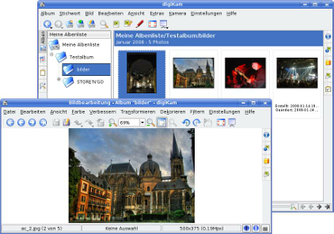

digiKam KDE3
Archivierte Anleitung
Dieser Artikel wurde archiviert, da er - oder Teile daraus - nur noch unter einer älteren Ubuntu-Version nutzbar ist. Diese Anleitung wird vom Wiki-Team weder auf Richtigkeit überprüft noch anderweitig gepflegt. Zusätzlich wurde der Artikel für weitere Änderungen gesperrt.
Anmerkung: Dieser Artikel ist veraltet, eine Alternative ist der Artikel digiKam
Zum Verständnis dieses Artikels sind folgende Seiten hilfreich:
 digiKam
digiKam  ist ein KDE-Programm zur Fotoverwaltung und -bearbeitung, mit dem sich fast alle Aufgaben rund um die Digitalfotografie erledigen lassen. Alternativen zu digiKam sind F-Spot oder gThumb für GNOME und das plattformübergreifende Archiv/Picasa, das aber keine freie Software ist. Einige der mit digiKam leicht lösbaren Aufgaben sind z.B.:
ist ein KDE-Programm zur Fotoverwaltung und -bearbeitung, mit dem sich fast alle Aufgaben rund um die Digitalfotografie erledigen lassen. Alternativen zu digiKam sind F-Spot oder gThumb für GNOME und das plattformübergreifende Archiv/Picasa, das aber keine freie Software ist. Einige der mit digiKam leicht lösbaren Aufgaben sind z.B.:
Importieren der Bilder von einer Digitalkamera
Bildverwaltung
Stapelverarbeitung von Bild-Dateien
Erstellen einer Foto-CD
Erstellen einer MPEG-Präsentation
Für einige der Aufgaben müssen zusätzlich die entsprechenden Plugins installiert werden.
digiKam und Plugins installieren¶
Zuerst muss man - je nach Bedarf - folgende Pakete installieren [1]:
digikam - das eigentliche Programm, unter Dapper noch in universe [2]
digikam-doc (universe) - englisches Handbuch zu Digikam (bis Gutsy noch mehrsprachig)
kipi-plugins - Module zur Erweiterung von Digikam, u.a. für Stapelverarbeitung von Bildern; unter Dapper noch in universe
kipi-plugins-doc - mehrsprachiges Handbuch zu den Kipi-Plugins
imagemagick - Stapelverarbeitung von Bildern
mjpegtools (multiverse, [2]) - zum Erstellen einer Foto-CD
k3b - zum Brennen einer Foto-CD
vcdimager (universe) - zum Erstellen einer Video-CD
kde-i18n-de - für eine deutsche Oberfläche
Paketliste zum Kopieren:
sudo apt-get install digikam digikam-doc kipi-plugins kipi-plugins-doc imagemagick mjpegtools k3b vcdimager kde-i18n-de
sudo aptitude install digikam digikam-doc kipi-plugins kipi-plugins-doc imagemagick mjpegtools k3b vcdimager kde-i18n-de
Nach der Installation ist digiKam unter GNOME im Menü "Anwendungen -> Grafik", bei KDE unter "Grafik -> digiKam" zu finden.

Funktionen¶
Bild-Import von Digitalkamera¶
Um eine Digitalkamera hinzuzufügen, wählt man aus dem Menü "Kamera -> Kamera hinzufügen". Hier kann man nun zunächst die "Automatische Erkennung" versuchen. Klappt dies nicht, kann man die Kamera über "Hinzufügen" selbst anlegen. Es gibt bereits Voreinstellungen für sehr viele Modelle. Sollte das eigene Modell hier noch nicht aufgeführt sein, so nimmt man im rechten Teil des Auswahlfensters die Einstellungen selbst vor.
Hierbei ist zu beachten, dass die Kamera eventuell erst auf das geeignete Protokoll eingestellt werden muss: um z.B. die Voreinstellung "SONY DSC-V1 (PTP Mode)" zu verwenden, muss die Kamera auch auf den PTP-Modus eingestellt sein, sonst schlägt die Verbindung fehl. Dies betrifft auch viele Kameras von Canon, HP, Nikon und Ricoh. Im Zweifelsfall ist die Bedienungsanleitung der Kamera zu Rate zu ziehen (siehe auch Digitalkamera - Geräteschnittstellen).
Heute können die meisten neueren Kameras (auch) als USB-Massenspeicher eingebunden werden. Diese Kameras werden - vergleichbar mit USB-Sticks - nach dem Verbinden mit dem PC und dem Einschalten der Kamera in der Regel als externer Massenspeicher automatisch eingebunden. Etwas versteckt unter dem Pseudo-Kameranamen "Eingebundene Kamera" findet sich dieser Kameratyp dann auch in digiKam im Einrichtungsmenü, unter "Kamera Anschlusspfad" kann man dann auch den Pfad in das Bilderverzeichnis zur Kamera hinterlegen. Nun ist noch ein frei wählbarer Kameraname einzugeben (standardmäßig steht dort "Directory Browse") und der Verbindung sollte nichts mehr im Wege stehen.
Falls man GNOME verwendet, kann man im GNOME-Menü unter "System -> Einstellungen -> Wechseldatenträger- und Medien -> Kameras" auch digiKam als Programm zum Importieren von Fotos angeben, falls dies gewünscht ist. Dazu trägt man den Befehl digikam --detect-camera in die Befehlszeile ein.
Stapelverarbeitung¶
Eine der wichtigsten und besten Funktionen von digiKam ist die Stapelverarbeitung von Bildern. Wenn die Kipi-Plugins installiert sind, hat man hier viele Möglichkeiten. Die Plugins kann man auch über "Einstellungen -> digiKam einrichten -> KIPI-Module" einzeln aus- und abwählen.
 Um Bilder zu bearbeiten, wählt man zunächst einen Ordner aus bzw. fügt über "Album -> Importieren" neue Bilder hinzu. Zunächst müssen alle zu bearbeitenden Bilder markiert werden. Will man alle auswählen, geschieht dies am einfachsten mit der Tastenkombination
Strg +
A . Nun kann man über "Extras -> Stapelverarbeitungen" aus dem Menü die Stapelverarbeitung beginnen.
Um Bilder zu bearbeiten, wählt man zunächst einen Ordner aus bzw. fügt über "Album -> Importieren" neue Bilder hinzu. Zunächst müssen alle zu bearbeitenden Bilder markiert werden. Will man alle auswählen, geschieht dies am einfachsten mit der Tastenkombination
Strg +
A . Nun kann man über "Extras -> Stapelverarbeitungen" aus dem Menü die Stapelverarbeitung beginnen.
Am Beispiel einer Größenanpassung mit gleichzeitiger Qualitätsänderung soll nun die Stapelverarbeitung erklärt werden. Zunächst werden alle Bilder im Ordner ausgewählt. Dann wählt man "Extras -> Stapelverarbeitungen -> Größe ändern". Will man die Größe proportional ändern, stellt man oben bei Typ auf "Proportional (1 Dim.)" um. Unter "Optionen" kann man nun die gewünschte Größe einstellen (siehe Bild links). Bei der Wahl 1 Dimension ist hier mit Größe immer die Breite des Bildes gemeint. Die Höhe wird automatisch proportional angepasst, hierbei werden auch Bilder im Hochformat korrekt berücksichtigt. Mit dem Regler "Bildqualität" kann man die Qualität des Zielbildes festlegen. Je größer die Qualität, desto größer ist natürlich auch die Datei. Den Filter kann man in der Regel auf der Voreinstellung belassen. Die weiteren Einstellungen, wie "Zielordner" und "Überschreibmodus" sollten selbsterklärend sein. Ist alles fertig eingestellt, klickt man unten auf Start und die Umwandlung beginnt.
Video-CD erstellen¶
Um nun eine VCD oder SVCD zu erstellen, markiert man die gewünschten Fotos im Album. Nun wählt man im Menü "Extras -> MPEG-Diaschau erstellen". Macht man dies zum ersten Mal, wird zunächst der Pfad zu ImageMagick gesetzt. Normalerweise stimmt dieser Pfad, man braucht ihn also nur dann zu überprüfen, wenn etwas nicht funktioniert.
Im nun erscheinenden Fenster kann folgende Einstellungen vornehmen, von denen die meisten selbsterklärend sind:
Video-Format und -Typ
Bildanzeigedauer
Geschwindigkeit des Bildübergangs (Überblendung)
Hintergrundfarbe
Name der MPEG-Ausgabedatei
Außerdem kann noch eine Audio-Datei hinzugefügt werden. Bei Video-Typ sollte man im europäischen Raum die Voreinstellung "PAL" beibehalten. Um die Erstellung zu beginnen, wählt man rechts oben die Schaltfläche "Kodieren".
Der Film muss anschließend mit K3b als Video-CD gebrannt werden. Dazu ist das Paket
vcdimager (universe)
erforderlich [1] (siehe oben). Nun wählt man im K3b-Menü "Datei -> Neues Projekt -> Neues Video-CD Projekt" und zieht die Datei in das Projektfenster. Nun kann die CD gebrannt werden.
Sonstige Funktionen¶
digiKam bietet noch viele weitere Funktionen, von denen hier die wichtigsten kurz genannt sind:
Bilder scannen über "Album -> Importieren"
Bildschirmfoto über "Album -> Importieren"
HTML Galerie erstellen über "Album -> Exportieren"
Bilder-CD/DVD über "Album -> Exportieren"
Kalender erstellen über "Extras -> Kalender erstellen"
Diaschau erstellen über "Extras -> Fortgeschrittene Diaschau"
Bilder für die Benutzung auf dem iPod exportieren über "Extras -> Export to iPod"
Probleme und Lösungen¶
schnellere Vorschaubilder¶
Insbesondere bei Alben mit vielen Bildern erfolgt der Bildaufbau beim Durchblättern unter Umständen sehr schleppend. Unter Kubuntu bzw. KDE 3.5.x sollte dann in den Einstellungen des Dateimanagers Konqueror unter dem Punkt "Vorschauen & Metadaten" das lokale Protokoll digikamalbums aktiviert werden. Zusätzlich können bei Bedarf die Protokolle digikamdates und digikamtags ebenfalls aktiviert werden. Eine alternative Lösung für GNOME ist nicht bekannt.
Deutsche Spracheinstellung nach Update¶
Seit einem Update des Sprachpakets language-pack-kde-de-base (Version 8.04+20090105) für Kubuntu 8.04 Hardy ist die deutsche Bedienoberfläche in digiKam 0.9.3 verschwunden. Mit Hilfe von Synaptic kann man die Installation der älteren Version 8.04+20080415 erzwingen und anschließend sperren, bis ein offizielles Update verfügbar ist.
Wenn man sich damit anfreunden kann, Dateien manuell in das Systemverzeichnis zu kopieren, dann geht auch Folgendes zur Wiederherstellung:
Aus diesem Paket (.tar.gz) die Datei language-pack-kde-de-base/data/de/LC_MESSAGES/digikam.po entpacken (z.B. mit Ark).
Konsole starten und in das Verzeichnis von digikam.po wechseln. Dort folgenden Befehl ausführen:
msgfmt digikam.po -o digikam.mo
Dann folgenden Befehl ausführen:
sudo cp digikam.mo /usr/share/locale-langpack/de/LC_MESSAGES
digikam.mo irgendwo aufheben, um sie nach einem neuen Update der Sprachpakete wieder parat zu haben.

Links¶
Pflege einer digitalen Fotosammlung mit digiKam
 - viele nützliche Hinweise zur Fotoverwaltung
- viele nützliche Hinweise zur FotoverwaltungFotos sammeln und bearbeiten mit digiKam
- Artikel in EasyLinux 03/2007 Fotos mit digiKam aufbessern
- Artikel in EasyLinux 07/2006Elegant
, Vanilla und Clean Frames - weitere HTML Galerie Themen
- Erstellt mit Inyoka
-
 2004 – 2017 ubuntuusers.de • Einige Rechte vorbehalten
2004 – 2017 ubuntuusers.de • Einige Rechte vorbehalten
Lizenz • Kontakt • Datenschutz • Impressum • Serverstatus -
Serverhousing gespendet von